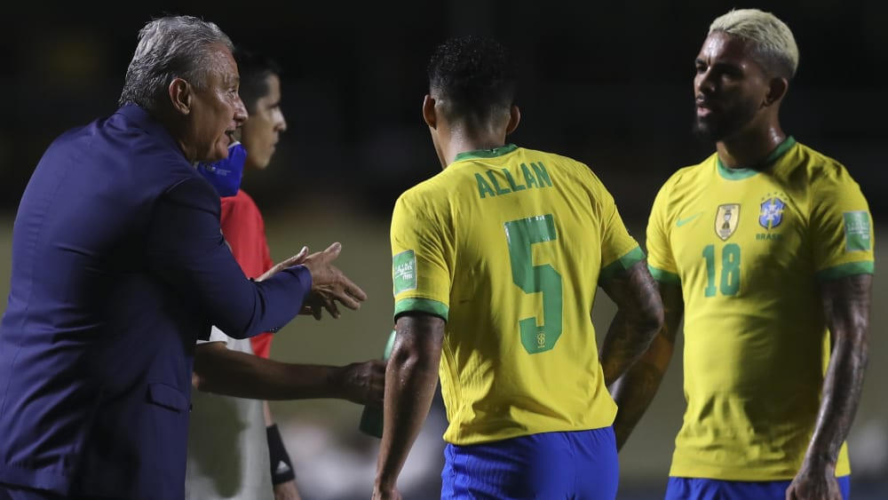

Em breve, a maior competição esportiva do planeta vai começar,
a Copa do Mundo, e sem dúvidas, a seleção brasileira é a que
gera a maior expectativa do público quando se fala do
torneio mundial.
Pode ser que esta não seja a melhor seleção brasileira da história,
mas, para a maioria dos especialistas, é a grande favorita ao
título. O time tem um estilo de jogo bem estabelecido, treinador
experiente e elenco em alto nível. Portanto, devemos considerar
este time, no conjunto, como uma forte candidata ao título.

A nação brasileira está muito esperançosa em relação a seleção,
depois de anos o Brasil não é mais "Neymar e mais 10" , após a
última temporada ficou claro que a seleção brasileira está muito
qualificada para Copa, com nomes como Vinicius Junior que fez uma
temporada incrível, Raphinha recém-contratado pelo Barcelona, alisson
e Ederson fechando o gol pelo liverpool e Manchester City, respectivamente,
edér Militão e Thiago Silva destruindo na zaga de seus times, Casemiro e
Fabinho sendo verdadeiros cães de guarda.
Especulações
Ainda não foi divulgado as convocações, mas podemos especular
alguns nomes . A última convocação teve nomes como os
goleiros Alisson, Ederson e Weverton; os laterais Daniel
Alves, Danilo, Alex Sandro, Alex Telles e Arana; os zagueiros
Thiago Silva, Marquinhos, Eder Militão e Gabriel Magalhães;
para o meio-campo, Casemiro, Fabinho, Danilo, Fred, Bruno
Guimarães, Philippe Coutinho e Lucas Paquetá; e os atacantes
Neymar, Raphinha, Rodrygo, Richarlison, Matheus Cunha, Gabriel
Jesus, Gabriel Martinelli e Vini junior. Quanto aos que podem
ir para Copa, temos a respectiva lista:
- Goleiros
Alisson (Liverpool)
Ederson (Manchester City)
- Defensores
Emerson Royal (Tottenham)
Emerson Royal (Tottenham)
Guilherme Arana (Atlético-MG)
Alex Telles (Manchester United)
Éder Militão (Real Madrid)
Marquinhos (PSG)
Thiago Silva (Chelsea)
- Meio-campistas
Casemiro (Real Madrid)
Fabinho (Liverpool)
Danilo (Palmeiras)
Fred (Manchester United)
Philippe Coutinho (Aston Villa)
Lucas Paquetá (Olympique de Lyon)
- Atacantes
Gabriel Jesus (Arsenal)
Rodrygo (Real Madrid)
Richarlison (Tottenham)
Neymar (PSG)
Vinícius Júnior (Real Madrid)
Raphinha (Barcelona)
Possibilidades
Everson (Atlético Mineiro)
Weverton (Palmeiras)
Daniel Alves (Sem clube)
Danilo (Juventus)
Gabriel Magalhães (Arsenal)
Diego Carlos (Sevila)
Bruno Guimarães (Newcastle United)
Danilo (Palmeiras)
Matheus Cunha (Atlético de Madrid)
Gabriel Martinelli (Arsenal)
Antony (Ajax)
Vemos você na Copa! Pra entrar no clima:
Oh, Brasil, olê, olê, olê!
Brasil, olê, olê, olê!
Brasil, olê, olê, olê!
Brasil, olê, olê, olê!
Em 58, foi Pelé
Em 62, foi o Mané
Em 70, o esquadrão
Primeiro a ser tricampeão
OOOOO, 94, Romário
OOOOO 2002, Fenômeno
Primeiro tetracampeão
Único penta é Brasilzão!
Oh, Brasil, olê, olê, olê!
Brasil, olê, olê, olê!
Brasil, olê, olê, olê!
Brasil, olê, olê, olê!